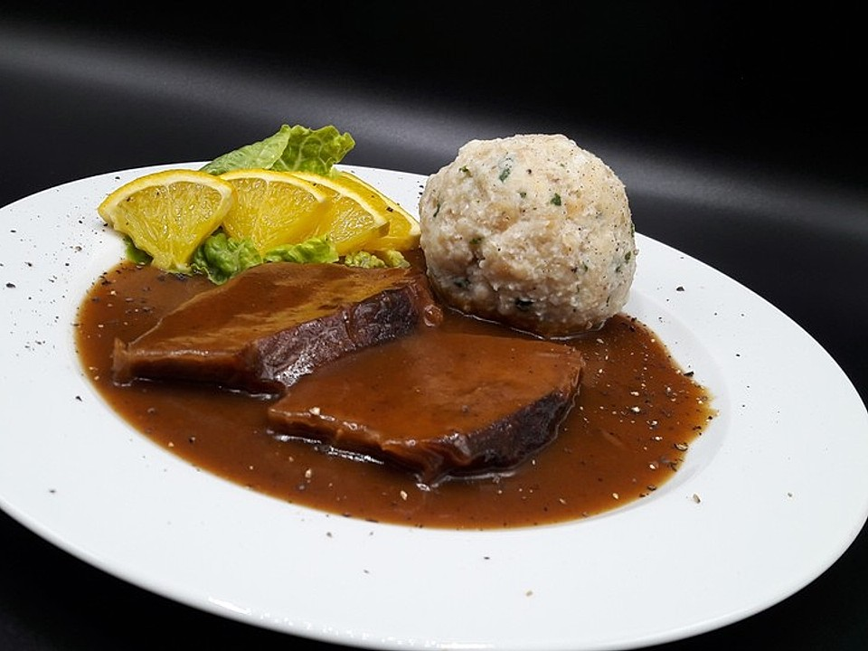
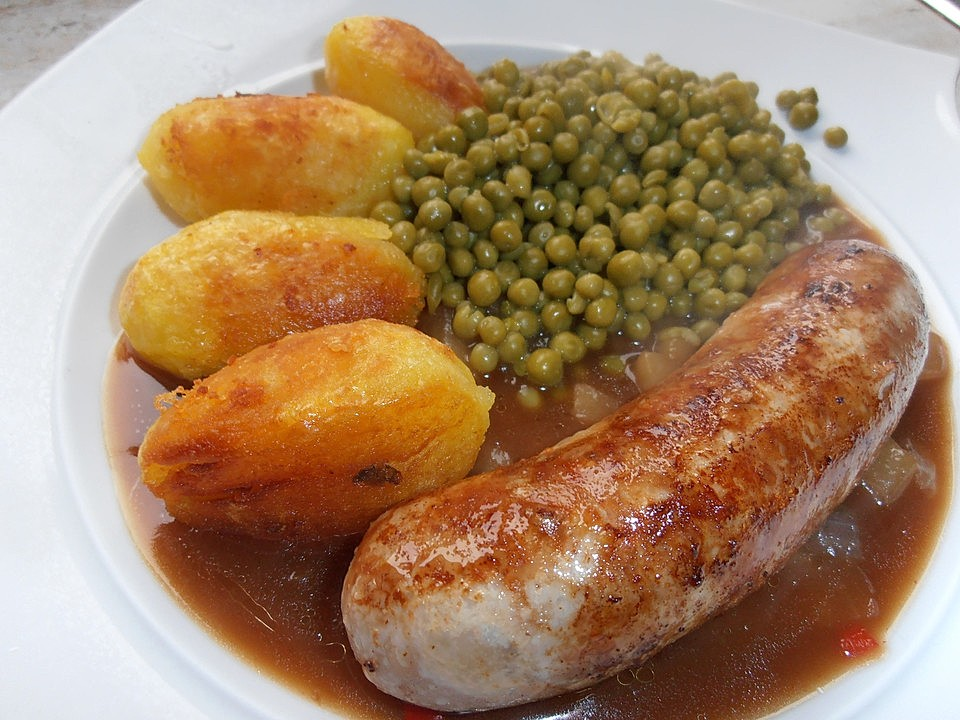

Sauerbraten
Ein klassisches deutsches Gericht, bei dem Rindfleisch langsam in einer säuerlichen Marinade geschmort wird.
| Zutaten | Menge |
|---|---|
| Rinderbraten | 1 kg |
| Rotweinessig | 500 ml |
| Gemüse (Karotten, Sellerie, Zwiebeln) | 500 g |
| Lorbeerblätter, Wacholderbeeren, Pfefferkörner | nach Geschmack |
Bratwurst mit Sauerkraut
Eine klassische Kombination aus gebratener Wurst und fermentiertem Kohl, die in ganz Deutschland beliebt ist.
| Zutaten | Menge |
|---|---|
| Bratwurst | 4 Stück |
| Sauerkraut | 500 g |
| Kartoffeln | 500 g |
Apfelstrudel
Ein traditionelles Gebäck mit süßer Apfelfüllung, eingewickelt in knusprigen Strudelteig.

| Zutaten | Menge |
|---|---|
| Äpfel | 5 Stück |
| Zucker | 100g |
| Zimt | 1 Teelöffel |
| Strudelteig | 1 Packung |